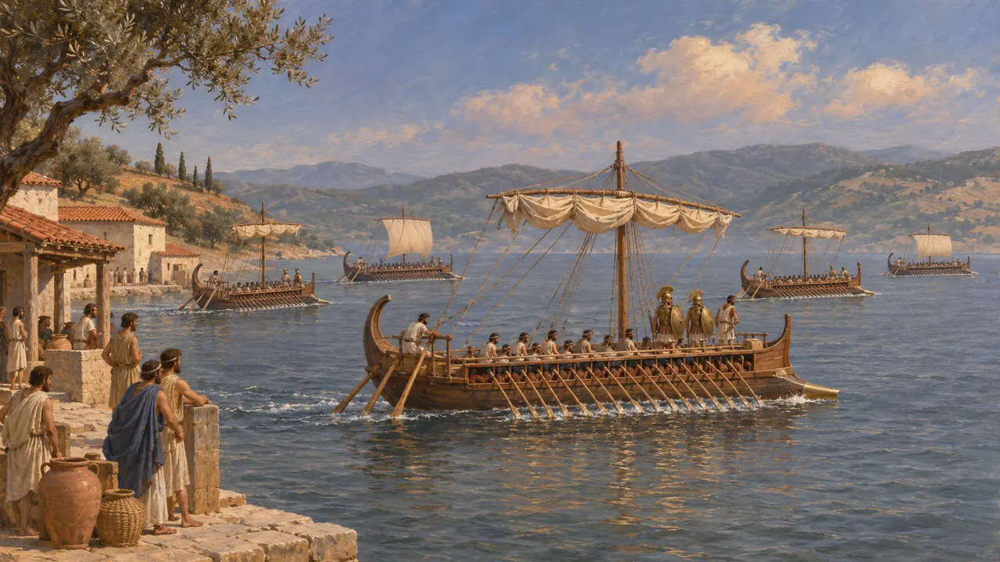
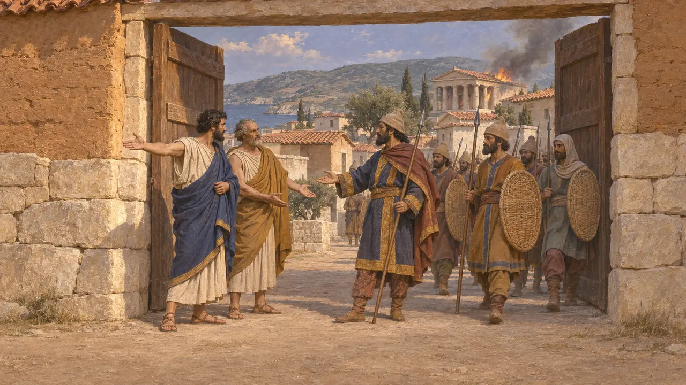
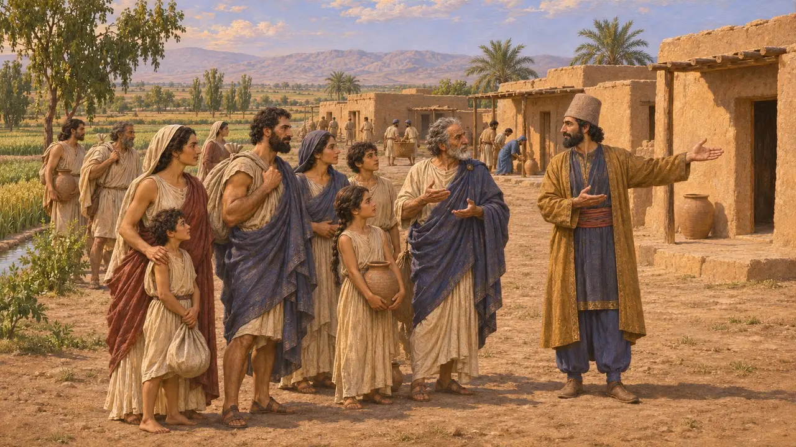
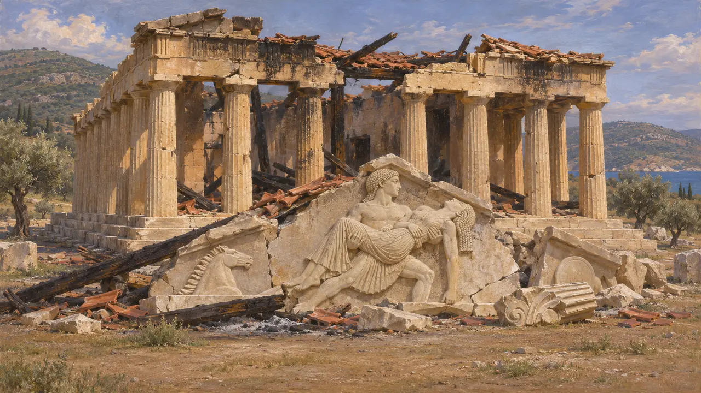
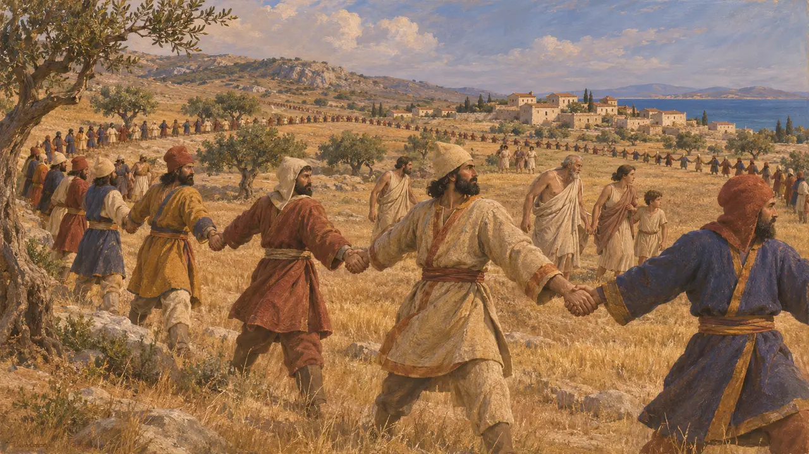

Eretria
Ciudad griega de la isla de Eubea, saqueada por una expedición persa en el 490 a. e. c.
En el juego: Nivel 8: La bahía de Maratón
Eretria era una ciudad griega marinera en la costa suroccidental de Eubea, frente al continente al otro lado de un estrecho golfo. En el 498 envió cinco naves en ayuda de la revuelta jonia contra Persia. En el 490 una flota persa al mando de Datis y de Artafernes, hijo del sátrapa de Sardes, la asedió, la tomó por traición, incendió sus templos y llevó a muchos de sus habitantes ante el Rey.
En el juego: La crónica del juego presenta a Eretria como la ciudad que envió cinco naves a los jonios y fue traicionada tras seis días de asedio en el 490. Sigue a Heródoto, la única fuente detallada de estos hechos.

Cinco naves para la revuelta jonia
Relato antiguoHeródoto cuenta que, cuando Aristágoras de Mileto buscó aliados, Atenas envió veinte naves y Eretria cinco trirremes. Los eretrios acudieron, explica, para devolver a Mileto la ayuda que les había prestado en una antigua guerra contra su vecina Calcis. Se sumaron a la marcha sobre Sardes en el 498, cuando ardieron la ciudad y un templo de la diosa Cibebe. A la vuelta, los griegos fueron derrotados cerca de Éfeso y murió el general eretrio Eualcides.
Herodotus 5.99, 5.102

Asedio y traición en el 490
Relato antiguoHeródoto cuenta que la flota persa desembarcó en Táminas, Quéreas y Egilia, en territorio de Eretria. Los eretrios decidieron defender sus murallas en lugar de huir a las colinas, mientras que 4.000 colonos atenienses enviados en su ayuda regresaron a Oropo. Tras seis días de duros combates, al séptimo dos ciudadanos principales, Euforbo y Filagro, entregaron la ciudad a los persas. Los persas la saquearon e incendiaron sus templos en venganza por los quemados en Sardes.
Herodotus 6.100-101

Cautivos cerca de Susa y la recuperación de la ciudad
Relato antiguoHeródoto cuenta que Darío había ordenado que los eretrios fueran esclavizados y llevados ante él, pero que no les hizo ningún daño cuando llegaron. Los asentó en Arderica, en tierra cisia, a unos 210 estadios de Susa y a 40 estadios de un pozo que daba betún, sal y aceite, donde en tiempos de Heródoto aún conservaban su propia lengua. El lugar no ha sido identificado. Heródoto también menciona naves eretrias en Artemisio y Salamina, y tropas eretrias en Platea.
Herodotus 6.119, 8.1, 8.46, 9.28

El templo incendiado de Apolo
En los documentosHacia 1900, excavadores griegos descubrieron en Eretria el templo de Apolo Dafnéforo y las esculturas de su frontón, del Arcaico tardío, entre ellas un grupo de Teseo raptando a la amazona Antíope. La Escuela Suiza de Arqueología en Grecia, que trabaja en Eretria desde 1964, ha estudiado el santuario con mayor detalle. Los excavadores suelen relacionar los escombros calcinados y las esculturas rotas con el saqueo del 490. Esta datación es una inferencia a partir de los restos, no un testimonio escrito.
Eretria excavation reports (Greek Archaeological Society; Swiss School of Archaeology in Greece)

El relato de Platón sobre la red
Leyenda posteriorMás de un siglo después, Platón escribió que los soldados de Datis se tomaron de las manos y barrieron el territorio eretrio como una red, de modo que nadie escapó. Heródoto relata esta batida en red solo para las islas de Quíos, Lesbos y Ténedos tras la revuelta jonia, no para Eretria. La versión de Platón se lee como una imagen dramática de conquista total y no la respalda el relato anterior.
Plato, Laws 698d; Plato, Menexenus 240b; Herodotus 6.31
Fuentes
- Herodotus, Histories, books 5-6, 8-9
- Eretria excavation reports (Greek Archaeological Society; Swiss School of Archaeology in Greece)
- Plato, Laws; Menexenus
- Thucydides 1.15
- J. F. Lazenby, The Defence of Greece 490-479 BC, 1993
- P. Briant, From Cyrus to Alexander, 2002